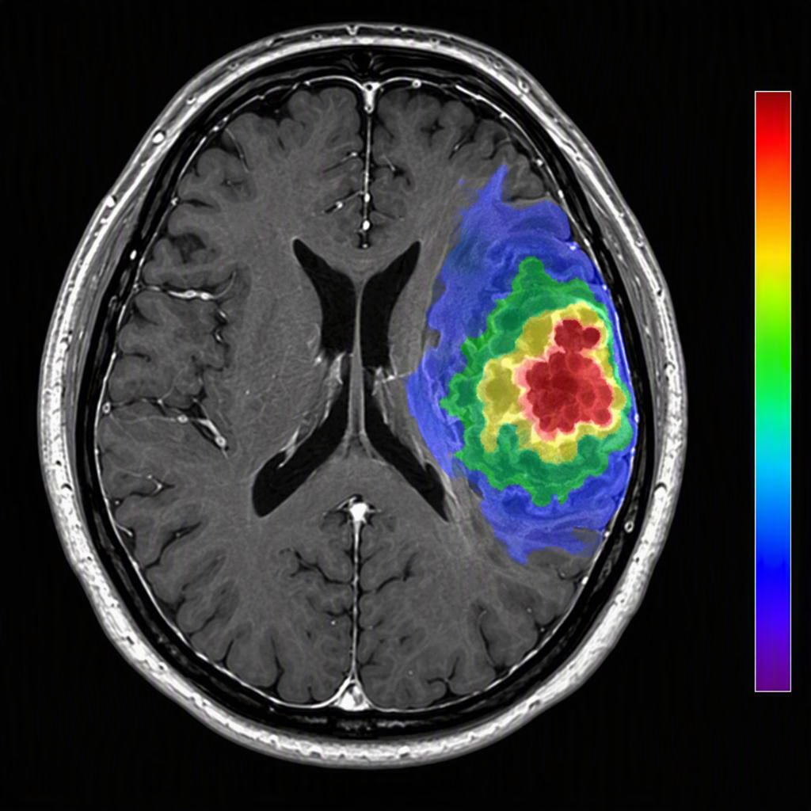
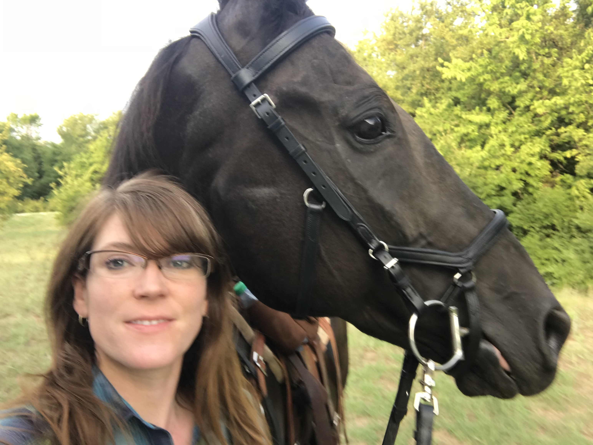
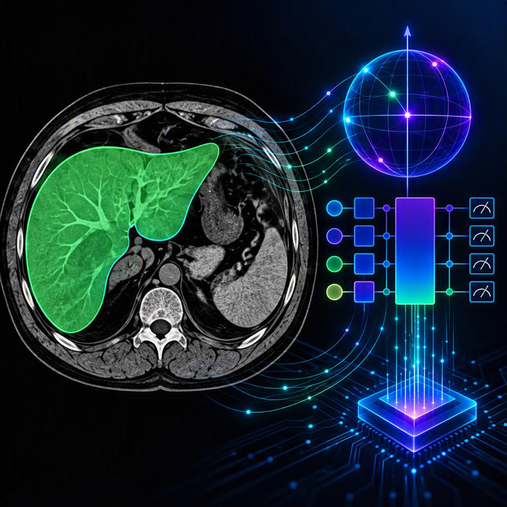

Quantitative MRI for precision oncology
Diffusion MRI, multiparametric imaging, and biopsy-correlated radiomic biomarkers for glioma characterization and image-guided care.
Diffusion MRIRadiomicsGlioma
Medical physics · computational imaging · image reconstruction · AI
I’m Dr. Rachel Glenn — a medical physicist and computational scientist working at the intersection of quantitative MRI, machine learning, and clinically meaningful decisions.
I’m humble enough to know I am replaceable at work. But I’m confident enough to know it would take 4 people 830 billion tokens.

My work follows a simple premise: better measurements make better decisions. I build bridges between physics, computation, and medicine — translating sophisticated models into tools that can be understood, tested, and trusted.
Today, I’m a Medical Physics Fellow / Resident in Imaging Physics at The University of Texas MD Anderson Cancer Center, where I study quantitative MRI and radiomic biomarkers for precision oncology.
Connect on LinkedIn ↗My research spans the imaging stack — from acquisition physics and quantitative MRI to image reconstruction, quantum computing, and models that help clinicians see cellular behavior.

Diffusion MRI, multiparametric imaging, and biopsy-correlated radiomic biomarkers for glioma characterization and image-guided care.

Exploring quantum and quantum-inspired methods for medical image reconstruction, segmentation, and clinically useful liver imaging.

Developing physics-informed AI methods that recover useful images from challenging, incomplete, or noisy measurements.
My work has always centered on imaging — from radar and optical systems to quantum spin systems, quantum computing, and medical imaging. Across each domain, I build ways to reconstruct, interpret, and trust complex signals.
Department of Imaging Physics · UTHealth / MD Anderson
Lockheed Martin
UTHealth / MD Anderson
Advanced Development Programs · Lockheed Martin
University of Utah · UC Irvine · Michigan State · Virginia Tech
Federal Aviation Administration · Salt Lake City, UT
Quantum, AI, image reconstruction, or physics?I’m here to help you acquire the data and make sense of it.